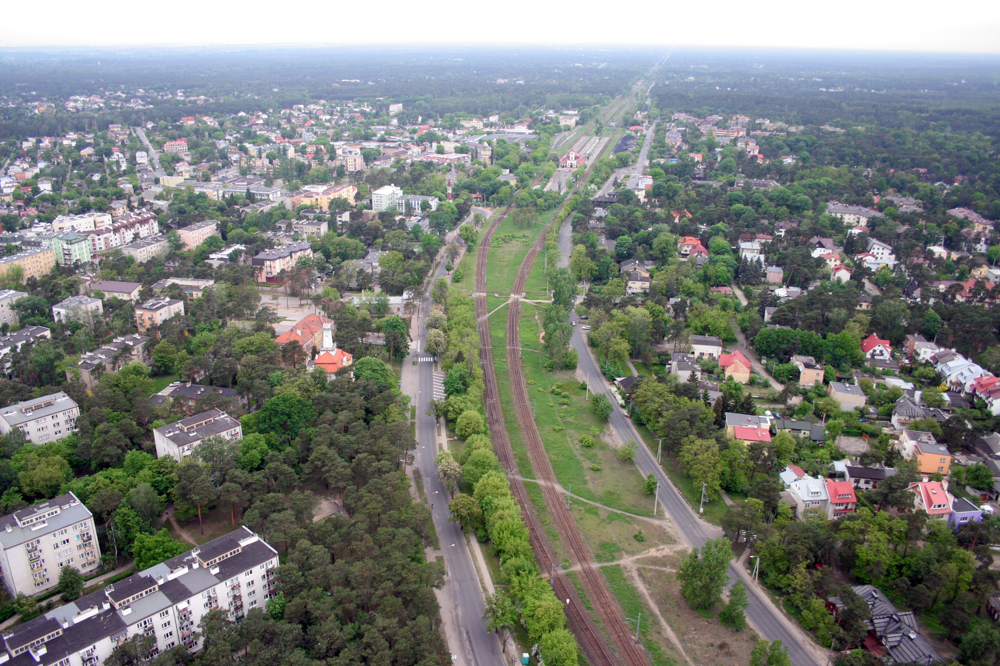

O Otwocku słów kilka:

Otwock, gdzie ptaki budzą dusze śpiewem, a rzeka Świder tańczy z zachodem słońca. Miejsce, gdzie historia i nowoczesność splatają się w jedno. To miasto pełne magii, uczucia, korzeni i przyszłości. Otwock, gdzie serca biją zgodnie z jego rytmem.
Znani ludzie z Otwocka:
Nadchodzące wydarzenia w Otwocku:
| Wydarzenie | Data rozpoczęcia | Data zakończenia |
|---|---|---|
| Wernisaż Malarstwa "Kolory Otwocka" | 20.09.2023 | 22.09.2023 |
| Koncert na Placu Sienkiewicza | 05.11.2023 | 06.11.2023 |
| Filmowe Wieczory w Parku | 12.07.2023 | 14.07.2023 |
| Kurs Fotografii Krajobrazowej | 18.10.2023 | 22.10.2023 |
| Otwock Festiwal Kultury | 25.08.2023 | 28.08.2023 |